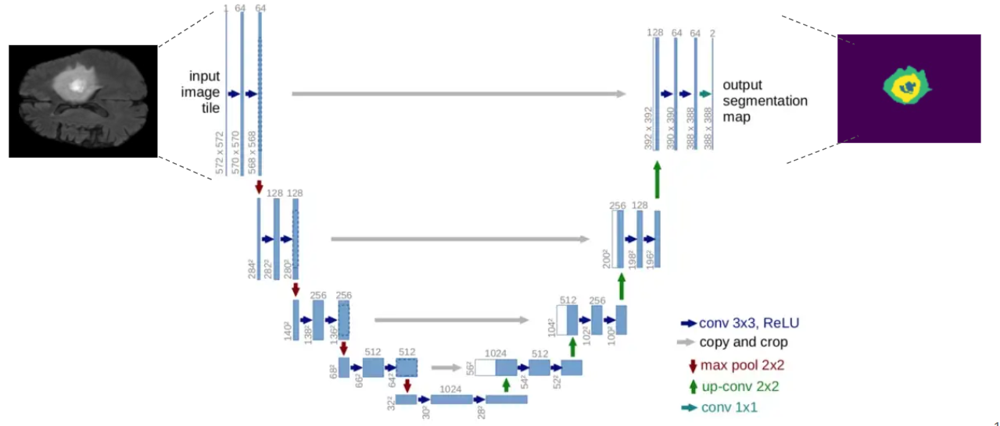

A brain tumor is a cancerous and non-cancerous mass or growth of abnormal cells in the brain. It can begin else- where and spread to the brain. There is considerable significance in MR-Images of the brain in identifying the outline of the tumor and in identifying clinical relevance in the diagnosis, prognosis, and treatment of the tumor.
Recent improvements using deep learning models have proved their effectiveness in various seg- mentation and medical imaging tasks, many of which are based on the U-Net network structure with symmetric encoding and decoding paths for end-to-end segmentation.
In this work, we aim to develop a pipeline consisting of a baseline deep learning model with 3D U-Net constituting adaptation in the training, model structure, and model parameters/hyper-parameters for semantic segmentation of brain tumors. Furthermore, instead of using one model for best results, multiple variants of the U-Net were trained with tweaked hyper-parameters and encoding/decoding blocks to reduce errors and improve performance. Brain Tumor Segmentation (BraTS) Challenge 2020 data was chosen as the baseline for our choice. Semantic segmentation provides the corresponding class for every pixel of the image and U-Net architecture localizes the area of abnormality. The output of the model provides a corresponding segmented mask of the tumor, given a multi-band 3D scan of the brain (preferably MRI scans), the main cause is to segment tumors from the volumized layers semantically.
U-Net, which evolved from the traditional convolu- tional neural network, was first designed and applied in 2015 to process biomedical images. As a general convolutional neural network focuses its task on image classification [20], where input is an image and output is one label, but in biomedical cases, it requires us not only to distinguish whether there is a disease but also to localize the area of abnormality. U-Net is dedicated to solving this problem. The reason it is able to localize and distinguish borders are by doingclassification on every pixel, so the input and output share the same size.
The study of semantically segmenting Brain Tumors from MR-Images comprehending with multi-band channels on 3D volumes are carried out in eight phases.
The training was performed on cloud GPU (Google Colab), with the default RAM. Fifty epochs were used for training each model. Implementation was based on the TensorFlow framework. Fifty steps per batch were used at a time per epoch, and the batch size was set to 2. The Adam optimizer [30] was used with an initial learning rate (α) of 0.0001 without further adjustments during the training, as it can self-adjust the rate of gradient update so that no manual reduction of α is needed. The total training time for all the models was recorded to be about 20 hrs.
It is not that easy to validate the performance of semantic segmentation on bio-medical imaging, so for that, there is a major non-homogeneity while choosing the evaluation met- ric/parameter. For that reason, IoU (Intersection over Union) has been selected as the standard measure for evaluating the result of the ROI.
The lower the loss, the better the model is, the higher the accuracy, and the more satisfactory the results. Out of all the five models, ϕelu performs best on top of all the other four models. All of these training was done on 50 epochs. From all of the results, it is concluded that U-Net using ELU as the activation function can learn the visual features and segmentation margin from different training samples achieving the highest accuracy of 0.9821 (98.21 in %).